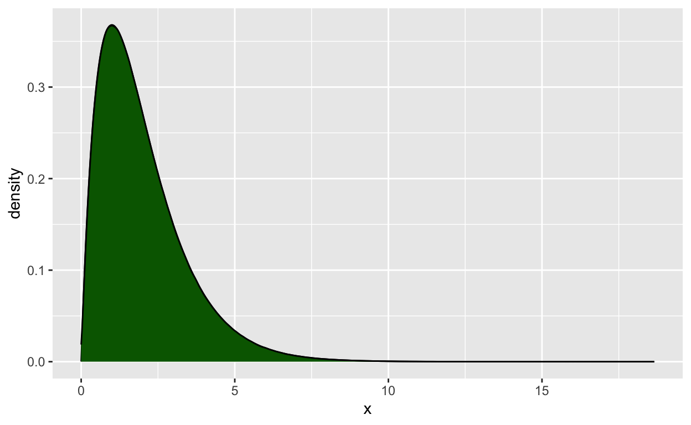

Einführung
Was können Sie von dieser Übung erwarten?
Wir möchten Ihnen eine erste Möglichkeit geben, sich mit dem Statistikprogramm R vertraut zu machen.
Dazu verwenden wir das Paket learnr.
Dieses Paket gibt uns die Möglichkeit, R Aufgaben direkt
über Ihren Browser zu üben. Dafür müssen Sie die Programme
R und R Studio nicht auf dem eigenen Computer
installieren.
Zunächst erhalten Sie eine Einführung in die grundlegende
Funktionalität von R. So können Sie dann im späteren
Verlauf des Semesters die behandelten statistischen Analysen direkt in
R ausprobieren. Zusätzlich finden Sie im Rahmen der
Lektionen kleine Quizaufgaben, um Ihr theoretisches Wissen zu
überprüfen.

Grundlegende Arithmetik in R
Wir können in R, ähnlich wie auf einem Taschenrechner,
alle mathematischen Grundrechenoperationen ausführen.
Dazu tippen Sie einen Rechenbefehl in das Programmierfenster und
drücken auf Run Code.
Berechnen Sie: \(2 + 3\)
Berechnen Sie: \(7 - 3\)
Berechnen Sie: \(3 \cdot 9\)
Berechnen Sie: 9 \(\div\) 3
Berechnen Sie: \(3^3\)
Falls Sie beim Schreiben eines der Befehle Hilfe benötigen, können
Sie auf Hint klicken.
3^3Berechnen Sie: Wurzel aus 9
sqrt(9)Berechnen Sie: \(\sqrt{9} \cdot (2+6)\)
sqrt(9) * (2+6)Datenobjekte in R
Natürlich wollen wir R nicht nur wie einen
Taschenrechner verwenden, denn das Programm kann noch viel mehr.
Einer der größten Vorteile von R ist es, dass wir
Objekte definieren können. Mit diesen Objekten können
wir im Rahmen von Analysen oder zu einem späteren Zeitpunkt
weiterarbeiten.
Datenobjekte
Wir wollen 3 Arten von Datenobjekten kennenlernen:
- Skalar
- Vektor
- Matrix
Die folgende Graphik zeigt Ihnen, wie die 3 Arten von Datenobjekten in einem Datensatz aussehen könnten:

Skalar
Der einfachste Objekttyp in R ist der Skalar. Ein Skalar ist einfach nur ein einzelner Wert, z.B. eine Zahl oder ein Wort.
Aufgabe
Nun wollen wir den Wert 100 einem Skalar mit dem Buchstaben
a zuweisen.
a = 100Wie Sie bemerken, erzeugt R, wenn Sie diesen Code ausführen, keinen
Output. Dazu geben Sie nun lediglich den Namen des Skalars in das
Eingabefeld unterhalb Ihres Codes ein und drücken erneut
Run Code. Wir haben unserem Skalar mit dem Wert 100 den
“Namen” a gegeben.
Wir können einen Skalar auch mit dem Ergenbnis einer Rechenoperation belegen.
Aufgabe
Erstellen Sie bitte den Skalar b, welcher das Ergebnis
der Rechnung \(3 \div 100\) enthalten
soll, und lassen Sie sich diesen direkt anzeigen.
b = 3 / 100
bWeiterführend können wir einen Skalar auch mit dem Ergebis einer Rechenoption bestehend aus anderen Skalaren belegen.
Aufgabe
Erstellen Sie hierzu den Skalar a mit dem Wert \(50\), den Skalar b mit dem
Wert \(3\). Nun wollen wir einen
dritten Skalar c mit dem Ergebnis der Rechenoperation \((a + b) \div b\) belegen. Lassen Sie sich
das Ergebnis auch direkt ausgeben.
a = 50
b = 3
c = (a+b) / b
cHinweis: Wenn Sie in diesem Übungssheet Rechenoperationen
ausführen, müssen Sie Ihre Datenobjekte in jedem Eingabefeld wieder neu
“belegen”. In der Vollversion von R, welche Sie im 2. Semester
kennenlernen, merkt sich R diese Objekte. Wenn Sie also zum
Beispiel den Skalar a mit einem beliebigen Wert belegen,
merkt sich R dies und Sie können durch die Eingabe von
a jederzeit wieder mit dem Wert des Skalars a
weiterrechnen. Dies gilt auch für Vektoren oder ganze
Datensätze
Skalare müssen nicht numerisch sein, sondern können auch Worte
beinhalten. Wortobjekte heißen in R
characters (engl. strings). In R schreibt
man Worte immer in Anführungszeichen "".
Aufgabe
Erstellen Sie nun den Skalar a, der das Wort
Charlotte Fresenius und den Skalar b, der das
Wort Carl Remigius Fresenius beinhaltet. Lassen Sie sich
lediglich den Inhalt des Skalars b ausgeben.
a = "Charlotte Fresenius"
b = "Carl Remigius Fresenius"
bWie Sie sich vermutlich vorstellen können, behandelt R numerische und
character Skalare unterschiedlich. Zum Beispiel lassen sich mit
numerischen Skalaren grundlegende arithmetische Operationen durchführen
(Addition, Subtraktion, Multiplikation…) – das funktioniert mit
character Skalaren nicht. Um das auszuprobieren gehen Sie einfach zurück
in Ihr letztes Eingabefeld und versuchen die Rechenoperation \(a + b\) auszuführen. R wird
Ihnen hier die Fehlermeldung non-numeric
argument to binary operator ausgeben.
Vektor
Machen wir weiter mit Vektoren. Ein Vektor Objekt ist
einfach eine Kombination mehrerer Skalare in einem einzelnen Objekt
(z.B. eine Zahlen- oder Wortreihe). Zum Beispiel könnten die Zahlen von
1-10 in einen Vektor mit der Länge 10 kombiniert werden. Oder die
Buchstaben des Alphabets könnten in einen Vektor mit der Länge 26
gespeichert werden. Genau wie Skalare, können Vektoren numerisch oder
characters sein (Aber nicht beides auf einmal!)
Die einfachste Art einen Vektor zu erstellen ist mit der
c() Funktion. Das c steht für “concatenate”, was
auf Englisch so viel heißt wie “zusammenbringen”. Die c()
Funktion nimmt mehrere Skalare als Input und erstellt einen Vektor, der
diese Objekte enthält.
Wenn man c() benutzt, muss man immer ein
Komma zwischen die Objekte setzen (Skalare oder
Vektoren), die man kombinieren möchte.
Aufgabe
Lassen Sie uns die c() Funktion nutzen um einen
numerischen Vektor zu erstellen der a
heißt und die Zahlen von 1 bis 7 enthält. Lassen Sie sich das Ergebnis
direkt ausgeben:
a = c(1, 2, 3, 4, 5, 6, 7)
aSie können auch character Vektoren erstellen, indem
Sie die c() Funktion auf einzelne character Skalare
anwenden.
Aufgabe
Erstellen Sie einen Vektor, der die folgende Namen beinhaltet:
Freud, Wundt, Bandura,
Watson, Jung. Wir nennen diesen Vektor zur
besseren Übersicht einmal char.vec. Lassen Sie sich den
Inhalt des Vektors direkt ausgeben.
char.vec = c("Freud", "Wundt", "Bandura", "Watson", "Jung")
char.vecMit Vektoren lassen sich auch Rechenoperationen ausführen.
Aufgabe
Erstellen Sie den Vektor a mit den Zahlen von 1 - 3 und
den Vektor b mit den Zahlen von 4 - 6 und addieren diese zu
einem neuen Vektor c. Lassen Sie sich den neuen Vektor
c direkt anzeigen. Bei dieser Art der Addition wird jeweils
die \(n\)te Zahl des Vektors
a mit der \(n\)ten Zahl
des Vektors b addiert.
a = c(1, 2, 3)
b = c(4, 5, 6)
c = a + b
cVektoren lassen sich über die c() Funktion auch
aneinanderhängen. Anders als bei den Rechenoperationen funktioniert dies
auch mit character Vektoren.
Aufgabe
Erstellen Sie die Vektoren a mit den Farben
blau und rot sowie den Vektor b
mit den Farben gelbund grün. Hängen Sie diese
beiden Vektoren zu einem neuen Vektor c zusammen und lassen
sich diesen anzeigen.
a = c("blau", "rot")
b = c("gelb", "grün")
c = c(a, b)
cFaktor Variablen
Wir haben bereits gelernt, wie man einen Vektor aus character
Objekten erstellt. Manchmal brauchen wir in R jedoch Variablen, die
nicht nur Worte enthalten, sondern dem Programm mitteilen, dass es sich
um feste Gruppen oder Kategorien handelt. Es geht also
nicht nur um eine “Sammlung” von Worten (z.B. Nachnamen von Probanden),
sondern um festgelegte Analyseeinheiten. Solche Variablen heißen in R
factor.
In einer factor Variable ist jeder Kategorie eine Zahl zugeordnet (z.B. 1 = männlich, 2 = weiblich).
Um Faktor Variablen zu erstellen, machen wie einen Vorgang, den man Kodieren nennt und das geht so:
Wir haben einen Vektor mit Codes 1 und 2 für männlich und weiblich vorliegen:
geschlecht = c(1, 2, 2, 1, 2)
# Das Ergebnis ausgeben
geschlecht## [1] 1 2 2 1 2In dieser Form erkennt R diesen Vektor als numerische Variable. Um
Sie in einen Faktor umzuwandeln, definieren wir die Zahlen (1 und 2) als
levels des Faktors und geben dann jedem level einen Namen
(labels):
geschlecht = factor(geschlecht, levels = c(1,2), labels = c("männlich", "weiblich"))
# Das Ergebnis ausgeben
geschlecht## [1] männlich weiblich weiblich männlich weiblich
## Levels: männlich weiblichDas Ergebnis ist eine codierte Faktorvariable. Wenn wir Sie uns ausgeben lassen erhalten wir unter den Merkmalsausprägungen eine Liste mit den einzelnen Kategorien (levels) des Faktors.
R wird uns für Faktoren alle Ergebnisse nach der Reihenfolge der levels anzeigen. Wenn wir keine Faktorvariable haben, sondern eine character Variable funktioniert die Reihenfolge immer alphabetisch.
Aufgabe
Erstellen Sie nun im folgenden Eingabefeld den Vektor
Wohnort c(1,2,1,3,2,1) mit den Codes \(1\) für München, \(2\) für Hamburg und \(3\) für Köln. Erstellen Sie
erst einen numerischen Vektor und lassen diesen dann in einen Faktor
umwandeln und anzeigen.
Hinweis: Da R in dieser Übung keine Information
zwischen den einzelnen Eingabefeldern überträgt, müssen Sie die beiden
Schritte, die Ihnen in zwei unterschiedlichen Eingabefeldern gezeigt
wurden, nun in einem kombinieren
Wohnort = c(1,2,1,3,2,1)
Wohnort = factor(Wohnort, levels = c(1,2,3), labels = c("München", "Hamburg", "Köln"))
WohnortAn dieser Stelle ein weiterer Hinweis: R ist “case
sensitive”. Das bedeutet, dass Groß- und Kleinschreibung relevant ist.
Wenn Sie also beispielsweise den Vektor Wohnorterstellen,
wird R diesen nicht wiederfinden, wenn Sie
wohnort eingeben.
Vektor Indizierung
Manchmal möchten wir wieder einen einzelnen Skalar auswählen, der als
Teil von einem Vektor gespeichert ist. Diese Auswahl
eines Einzelelements nennt man Indizierung. Die Auswahl
eines kleineren Objekts aus einem größeren Objekt funktioniert in
R immer mit [].
Benötigen wir aus einem Vektor z.B. genau den 3. Skalar, schreiben wir einfach eine 3 in eckige Klammern hinter den Vektor.
Aufgabe
Erstellen Sie nun den Vektor color, der die folgenden
Farben enthält: blau, rot, grün,
gelb. Lassen Sie sich lediglich die zweite Farbe ausgeben
(In unserem Fall sollte in dem Ausgabefeld also “rot” erscheinen)
color = c("blau", "rot", "grün", "gelb")
color[2]Erstellen von Datenmatrizen
In der Psychologie beobachten wir für unsere Studien fast immer mehr als eine Variable. Wir könnten diese alle in einzelnen Vektoren speichern und uns die Objektnamen merken. Z.B.:
Name = c("Max", "Maja", "Mia", "Moritz", "Markus")
Alter = c(20, 31, 25, 34, 51)
Diagnose = c("Depression", "Zwangsstörung", "Depression", "Soziale Phobie", "Depression")Praktischer ist es, die einzelnen Vektoren in Tabellenform zu
speichern, der Datenmatrix. In R heißen Datenmatrizen
data.frame. Wir können die Vektoren folgendermaßen zu einem
data.frame kombinieren:
df = data.frame(Name, Alter, Diagnose)
# Das Ergebnis ausgeben
dfDies wollen wir direkt einmal üben:
Aufgabe
Erstellen Sie eine Datenmatrix mit dem Namen Personen
mit folgenden Informationen:
(Wir betrachten die Variablen
Name, Alter, Wohnort)
Peter, 41, Mainz
Susanne, 23, Regenburg
Hannes, 31, München
Jana, 43, Köln
Lassen Sie sich die Datenmatrix direkt ausgeben.
Name = c("Peter", "Susanne", "Hannes", "Jana")
Alter = c(41, 23, 31, 43)
Wohnort = c("Mainz", "Regensburg", "München", "Köln")
Personen = data.frame(Name, Alter, Wohnort)
PersonenWie in jeder Datenmatrix entsprechen die Zeilen den einzelnen Personen (Fällen) und die Spalten den Variablen.
R bezeichnet Zeilen und Spalten als
rows und columns. Wollen wir z.B.
wissen, wie viele Zeilen der data.frame hat, können wir
nrow() benutzen. Für die Anzahl der Spalten nehmen wir
ncol():
Probieren Sie dies einmal in Ihrem gerade erstellten Datensatz aus.
Fügen Sie am Ende Ihres Codes einfach entweder
nrow(Personen) oder ncol(Personen) ein.
Wenn wir die einzelnen Vektoren nicht bereits vorher definiert haben, können wir auch alles in einem Schritt machen. Das Ergebnis ist das gleiche:
df = data.frame("Name" = c("Max", "Maja", "Mia", "Moritz", "Markus"),
"Alter" = c(20, 31, 25, 34, 51),
"Diagnose" = c("Depression", "Zwangsstörung", "Depression", "Soziale Phobie", "Depression")
)
# Das Ergebnis ausgeben
dfWollen wir wieder eine einzelne Variable aus dem Datensatz benutzen,
können wir diese über das $ Zeichen anwählen:
df$Alter## [1] 20 31 25 34 51Indizierung
Wollen wir aus dem data.frame wieder einzelne Elemente verwenden,
nutzen wir wieder die Indizierung. Auch hier brauchen wir die
[]. Da wir im data.frame Zeilen und Spalten haben, brauchen
wir eine Möglichkeit, beides auszuwählen, wie ein Curser der von links
nach rechts, bzw. von oben nach unten läuft.
Wir trennen dafür unsere [] mit einem Komma
[,]. Alles, was links vom Komma steht,
bezieht sich auf Zeilen alles rechts vom Komma bezieht
sich auf Spalten.
Aufgabe
Um dies zu Üben erstellen Sie wieder eine Datenmatrix mit dem Namen
Personen mit folgenden Informationen:
(Wir
betrachten die Variablen Name, Alter,
Wohnort)
Peter, 41, Mainz
Susanne, 23, Regenburg
Hannes, 31, München
Jana, 43, Köln
Lassen Sie sich im Ausgabefeld nun lediglich den Wohnort von Susanne anzeigen.
Hinweis: Sie können den Code Ihres Datensatzes aus dem letzten Eingabefeld kopieren, um nicht alles neu schreiben zu müssen
Name = c("Peter", "Susanne", "Hannes", "Jana")
Alter = c(41, 23, 31, 43)
Wohnort = c("Mainz", "Regensburg", "München", "Köln")
Personen = data.frame(Name, Alter, Wohnort)
Personen[2,3]Nun haben Sie bereits einige der wichtigsten Grundfunktionen
von R kennengelernt und wir können dazu übergehen,
vorlesungsbegleitende Übungsaufgaben zu erarbeiten.
Vorlesung 1
Nun wollen wir damit starten, die in den Vorlesungen vermittelten
Inhalte direkt in R anzuwenden. Wir beginnen mit
deskriptivstatistischen Analysen. Zunächst betrachten wir Möglichkeiten,
wie wir numerische Daten beschreiben können.
Lagemaße
Lagemaße, auch bekannt als Maße der zentralen Tendenz, sind statistische Kennzahlen, die uns Informationen über die typische oder durchschnittliche Lage einer Verteilung geben. Sie helfen dabei, den Mittelpunkt oder die Mitte eines Datensatzes zu bestimmen.
Die gängigsten Lagemaße sind:
- Mittelwert (arithmetisches Mittel, engl. mean)
- Median
- Modus (Modalwert).
Lagemaße sind nützliche Werkzeuge, um einen Überblick über Daten zu gewinnen und Vergleiche zwischen verschiedenen Verteilungen anzustellen (z.B. bei Gruppenvergleichen).
Über folgende Befehle können Sie sich in R die eben
beschriebenen Lagemaße berechnen lassen:
- Mittelwert mit der
mean()Funktion - Median mit der
median()Funktion - Um den Modalwert herauszufinden lassen Sie sich am besten eine Häufigkeitstabelle erstellen. Wie das funktioniert werden wir uns im nächsten Schritt anschauen
Aufgabe
Sie leiten als Psychotherapeut:in eine KVT (Kognitive Verhaltenstherapie) Gruppentherapie und interessieren sich für die Altersstruktur Ihrer Patient:innen. Folgende Teilnehmer:innen haben Sie in Ihrer Gruppe:
| ID | Alter |
|---|---|
| 1 | 32 |
| 2 | 23 |
| 3 | 42 |
| 4 | 19 |
| 5 | 56 |
Berechnen Sie nun sowohl den Mittelwert als auch den Median des Alters Ihrer Therapiegruppe.
Hinweis: Erstellen Sie hierzu zunächst lediglich einen Vektor
namens Alter, der das Alter Ihrer Patient:innen enthält.
Wie wir uns ganze Datensätze deskriptiv näher anschauen, betrachten wir
im nächsten Schritt
Alter = c(32,23,42,19,56)
mean(Alter)
median(Alter)Erstellen Sie nun einen data.frame namens df, der die
oben beschriebenen Informationen enthält. Also sowohl ID,
als auch das dazugehörige Alter. Wie Sie bereits gelernt
haben, können Sie sich mit Hilfe des $ Symbols einzelne
Spalten (Variablen) aus einem Datensatz ausgeben lassen. Versuchen Sie
einmal, dieses Wissen zu transferieren, und sich aus dem Datensatz
df den Mittelwert der Variable Alter ausgeben
zu lassen.
df = data.frame("ID" = c(1, 2, 3, 4, 5),
"Alter" = c(32, 23, 42, 19, 56)
)
mean(df$Alter)Diese Funktionen funktionieren nur für Vektoren, nicht für
data.frames().
Vorsicht: Es kann vorkommen, dass wir in unseren Daten fehlende Werte (missings) haben. Dann funktionieren die Funktionen nicht mehr:
vektor = c(2, 4, NA, 1, 5, 2, 5, NA)
mean(vektor)## [1] NAWir können das Problem jedoch mit einem kleinen Extra-Argument
(na.rm = T) lösen. Die Statistik wird dann auf Basis aller
verfügbaren Werte berechnet und die fehlenden Werte werden
ignoriert:
mean(vektor, na.rm = T)## [1] 3.166667Manchmal wollen wir uns jedoch nicht die Mühe machen, die Deskriptivstatistiken alle einzeln und nacheinander zu berechnen. Schöner wäre es, mit einer Funktion alle relevanten Kennwerte auf einmal zu erhalten.
Eine solche Funktion ist describe() aus dem
psych Paket. Die describe() Funktion
funktioniert sowohl bei Vektoren als auch bei ganzen Datensätzen.
Hintergrund: Es gibt in R sognenannte Packages. Ein
R-Package ist einfach ein Bündel von Funktionen (also bereits
geschriebener Code), die in einem übersichtlichen Paket gespeichert
sind. In dieser Übung haben wir bereits alle benötigten Pakete
installiert. Wie Sie diese Pakete in der Vollversion von R
installieren, werden Sie nächstes Semester im Rahmen der R
Übung erfahren
Aufgabe
Um dies einmal zu verdeutlichen, kopieren Sie sich in das
nachfolgende Eingabefeld wieder Ihren Vektor Alter und
wenden die Funktion describe() an.
Alter = c(32,23,42,19,56)
describe(Alter)Nun wollen wir die describe() Funktion auf einen
Datensatz anwenden. Kopieren Sie dazu wieder Ihren Datensatz
df in das nachfolgende Eingabefeld und wenden die Funktion
an.
df = data.frame("ID" = c(1, 2, 3, 4, 5),
"Alter" = c(32, 23, 42, 19, 56)
)
describe(df)Wie wir in R Streuungsmaße berechnen, schauen wir uns in
der nächsten Vorlesung an.
Kategorische Variablen
Leider gibt es zum Zusammenfassen kategorialer (nominalskalierter) Variablen nicht so viele Möglichkeiten wie für die numerischen Variablen (die Mittelwert, Median, Standardabweichung… ermöglichen).
Absolute Häufigkeiten
Die gängigste Deskription einer kategorialen Variable ist die
Erstellung einer Häufigkeitstabelle. Eine Häufigkeitstabelle mit
absoluten Häufigkeiten lässt sich mit dem table() Befehl
erstellen.
Aufgabe
Erstellen Sie zur Übung folgende Datenmatrix und lassen sich die absoluten Häufigkeiten der Diagnosen ausgeben. Über eine Häufigkeitstabelle wie diese können Sie auch schnell den Modalwert ablesen.
| Geschlecht | Diagnose |
|---|---|
| m | Depression |
| w | Depression |
| w | Angststoerung |
| w | Depression |
| m | Soziale Phobie |
df = data.frame("Geschlecht" = c("m", "w", "w", "w", "m"),
"Diagnose" = c("Depression", "Depression", "Angststoerung", "Depression", "Soziale Phobie")
)
table(df$Diagnose)Relative Häufigkeiten
Um unsere absoluten Häufigkeiten in relativen Häufigkeiten anzeigen
zu lassen, können wir die Funktion prop.table() nutzen.
Diesen Befehl müssen wir jedoch auf den table() Befehl
anwenden. Unser Code sieht also so aus:
prop.table(table()).
Aufgabe
Kopieren Sie nun wieder Ihren Datensatz aus der vorherigen Übung in das Eingabefeld und lassen Sie sich eine relative Häufigkeitstabelle der Diagnosen ausgeben.
df = data.frame("Geschlecht" = c("m", "w", "w", "w", "m"),
"Diagnose" = c("Depression", "Depression", "Angststoerung", "Depression", "Soziale Phobie")
)
prop.table(table(df$Diagnose))Wissensüberprüfung 1. Vorlesung
Vorlesung 2
Graphische Darstellung von Häufigkeiten
R liefert Ihnen in der Grundversion bereits einige
Möglichkeiten, Daten graphisch darzustellen. Wir möchten uns zunächst
die Funktionen barplot() und hist() anschauen.
Wie die Namen bereits verraten, können wir mit der
barplot() Funktion Balkendiagramme und mit der
hist() Funktion Histogramme erstellen.
Aufgabe
Stellen Sie sich vor, Sie befinden sich in Ihrem Orientierungspraktikum in einer Psychiatrie. Johanna ist leitende Psychologin der Station auf der Sie arbeiten. Auf Ihrer Station wird ein transdiagnostisches Behandlungsangebot gemacht - es werden also eine Vielzahl an unterschiedlichen Störungsbildern behandelt. Sie kriegen mit, dass der Klinikdirektor auf Johanna zugeht und Sie um eine Übersicht über Art und Häufigkeit der im letzten Quartal behandelten Störungsbilder bittet. Da Sie sich bereits etwas mit der Aufbereitung von Daten auskennen, bieten Sie Johanna Ihre Hilfe an.
Johanna teilt Ihnen mit, dass Sie in R bereits einen
Datensatz names patienten_Daten erstellt hat, der alle
notwendigen Informationen enthält. Geben Sie in das nachfolgende
Eingabefeld einfach mal patienten_Daten ein, und drücken
auf run code.
Erstellen Sie nun zunächst eine (absolute) Häufigkeitstabelle der behandelten Diagnosen:
table(patienten_Daten$Diagnose)Im nächste Schritt wollen Sie diese Daten in einer geeigneten Form grafisch darstellen, um Sie dem Klinikdirektor zu präsentieren.
Hinweis: Mittels der hist() Funktion können wir
direkt die Häufigkeitsverteilung eines numerischen Vektors grafisch
darstellen. Wenn wir die barplot() Funktion verwenden,
müssen wir einen kleinen Umweg gehen. Wir müssen zunächst eine
Häufigkeitstabelle erstellen und diese dann mittels der
barplot() Funktion grafisch darstellen:
barplot(table())
barplot(table(patienten_Daten$Diagnose))Johanna ist ganz begeistert davon, wie gut Sie schon mit
R umgehen können. Sie erklärt Ihnen, dass die Spalte
Alkohol in Ihrem Datensatz für den (vor der Aufnahme in die
Klinik) wöchentlichen Alkoholkonsum der Patient:innen in Gläsern steht.
Sie bittet Sie darum, diesen Konsum in einer geeigneten Darstellung zu
visualisieren.
hist(patienten_Daten$Alkohol)Wissensüberprüfung 2. Vorlesung
Vorlesung 3
Streuungsmaße
Streuungsmaße sind statistische Kennzahlen, die uns Auskunft über die Verteilung oder Streuung von Daten um die zentrale Tendenz geben. Sie helfen dabei, die Variabilität oder die Ausdehnung eines Datensatzes zu quantifizieren.
Die gängigsten Streuungsmaße sind:
- Spannweite (engl. range)
- Varianz
var() - Standardabweichung (engl. standard deviation, SD)
sd() - Quartilabstand (engl. inter-quartile-range, IQR)
IQR()
Streuungsmaße helfen dabei, die Homogenität oder Heterogenität von Daten zu analysieren und den Grad der Variation zu verstehen.
Aufgabe
Ann ist eine Klinische Psychologin, die die Ergebnisse eines psychologischen Tests zur Messung der sozialen Angst bei ihren Patienten analysiert. Sie hat die Testergebnisse von 8 Patienten in einem Vektor gespeichert, wobei jeder Wert im Vektor die Schwere der sozialen Angst für einen Patienten darstellt. Ann möchte die Varianz und die Standardabweichung dieser Testergebnisse berechnen, um die Streuung und die durchschnittliche Abweichung von der durchschnittlichen sozialen Angst in ihrer Patientenstichprobe zu verstehen.
Erstellen Sie in R einen Vektor mit den Testergebnissen und berechnen Sie die folgenden Statistiken:
- Die Varianz der Testergebnisse.
- Die Standardabweichung der Testergebnisse.
Folgende Testergebnisse hat Ann vorliegen:
| ID | Testergebnis |
|---|---|
| 1 | 52 |
| 2 | 42 |
| 3 | 38 |
| 4 | 56 |
| 5 | 55 |
| 6 | 29 |
| 7 | 48 |
| 8 | 34 |
angst = c(52, 42, 38, 56, 55, 29, 48, 34)
var(angst)
sd(angst)
#auch über Funktion describe() möglichAufgabe
Nun befinden Sie sich wieder in Ihrem Praktikum und die leitende
Psychologin Johanna kommt mit einer erneuten Bitte auf Sie zu. In Ihrem
Datensatz patienten_Daten gibt es die Spalte
PWB_ges. Dieser Wert steht für den Gesamtscore des
Psychological Well Being Fragebogens. Ein Fragebogen, der das Konstrukt
Psychisches Wohlbefinden misst. Johanna möchte nun gerne wissen, wie
hoch die Standardabweichung über alle PWB Werte hinweg ist und in
welchem Bereich 50% der Werte liegen.
sd(patienten_Daten$PWB_ges)
IQR(patienten_Daten$PWB_ges)Während Sie diese Analyse rechnen, überkommt Sie die Frage, ob sich
der Durchschnittsscore (Mittelwert) des PWB innerhalb der
einzelnen Diagnosegruppen unterscheidet. Berechnen Sie dazu einmal den
PWB Score nur für die Gruppe der Depressiven und der
Patient:innen mit Angststörung. Beantworten Sie danach das nachfolgende
Quiz.
Hinweis: Sie wissen bereits, dass man mit den eckigen Klammern
[] einzelne oder mehrere Objekte aus einem Datensatz oder
Vektor “herausziehen” kann. Bei data.frames, die sowohl Zeilen als auch
Spalten haben, trennen wir die eckigen Klammern mit einem Komma
[,]. Alles vor dem Komma bezieht sich auf die Zeilen
(Fälle), alles nach dem Komma auf die Spalten (Variablen). Anstatt mit
Indizes zu arbeiten können wir Werte jedoch auch nach einer Logik
auswählen. Dafür eigenen sich sogenannte Bool’sche Operatoren
=, >, <. Um z.B. nur PWB Werte von
Patient:innen mit der Diagnose Depression anzeigen zu
lassen, können wir schreiben
patienten_Daten$PWB_ges[patienten_Daten$Diagnose == "Depression"]
mean(patienten_Daten$PWB_ges[patienten_Daten$Diagnose == "Depression"])
mean(patienten_Daten$PWB_ges[patienten_Daten$Diagnose == "Angstst."])Wissensüberprüfung 3. Vorlesung
Gegeben ist folgende Verteilung:

Gegeben sind folgende Werte:
| V1 | V2 | V3 | V4 | V5 | V6 | V7 | V8 | V9 | V10 | |
|---|---|---|---|---|---|---|---|---|---|---|
| ID | 1 | 2 | 3 | 4 | 5 | 6 | 7 | 8 | 9 | 10 |
| Wert | 2 | 3 | 4 | 5 | 6 | 6 | 10 | 12 | 14 | 18 |
Vorlesung 4
Wissensüberprüfung 4. Vorlesung
Vorlesung 5
Test
Vorlesung 6
In folgender Tabelle sehen Sie, wie gut Person A und Person B in einem Leistungstest abgeschnitten haben. Wie sie erkennen können, haben sie jedoch unterschiedliche Tests absolviert.
| Person | Leistungstest | Punkte |
|---|---|---|
| A | SpeedA | 108 |
| B | SpeedB | 103 |
Der folgenden Tabelle können Sie Normwerte der beiden Tests entnehmen.
| Test | Standardabweichung | Mittelwert |
|---|---|---|
| SpeedA | 5 | 102 |
| SpeedB | 4 | 100 |
Here’s an exercise with some prepopulated code as well as
exercise.lines = 5 to provide a bit more initial room to
work.
Now write a function that adds any two numbers and then call it:
add <- function() {
}Topic 2
Exercise with Hint
Here’s an exercise where the chunk is pre-evaluated via the
exercise.eval option (so the user can see the default
output we’d like them to customize). We also add a “hint” to the correct
solution via the chunk immediate below labeled
print-limit-hint.
Modify the following code to limit the number of rows printed to 5:
mtcarshead(mtcars)Quiz
You can include any number of single or multiple choice questions
as a quiz. Use the question function to define a question
and the quiz function for grouping multiple questions
together.
Some questions to verify that you understand the purposes of various base and recommended R packages:
<<<<<<< HEAD
======= >>>>>>> ef31d91195a860ddc341d74ca368906db75fd797